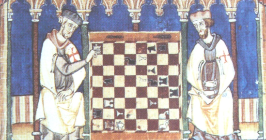
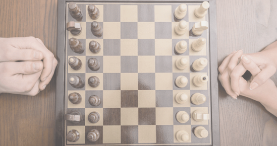
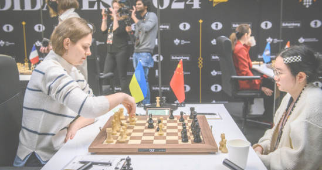
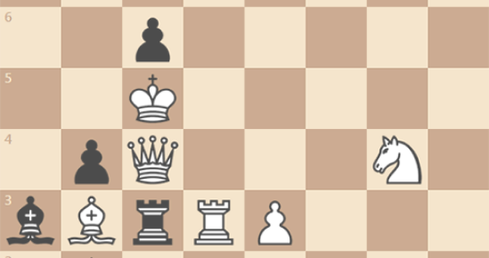
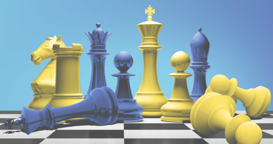

Шахи - це і мистецтво, і спорт, і наука
-

Історія шахів
Шахи — це гра з глибокими коренями, що поєднує в собі елементи мистецтва, науки та спорту. Її історія розпочалася понад тисячу років тому в Індії, де шахи були відомі під назвою "чатуранга" і символізували військову стратегію. Гра швидко поширилася на інші країни, і через Персію потрапила до арабського світу, де зазнала деяких змін і отримала назву "шах мат", що означає "король помер".
Згодом шахи досягли Європи, де здобули популярність серед аристократії, ставши символом мудрості та інтелектуального розвитку. У середньовіччі гра набула широкого поширення при королівських дворах, де її вважали відображенням політичної та військової стратегії. Правила шахів неодноразово змінювалися, і лише в XV столітті вони набули сучасного вигляду.
Із часом шахи перетворилися на справжній спорт із власними турнірами та чемпіонатами, об’єднуючи найкращих гравців світу. Сьогодні шахи є не тільки способом розвинути логіку й стратегічне мислення, але й міжнародною мовою, яка об’єднує людей незалежно від національності та віку. Так, пройшовши крізь століття змін і вдосконалень, шахи стали більше, ніж грою — вони стали символом людської культури й інтелектуальних звершень. -

Правила гри
Правила гри в шахи спрямовані на те, щоб кожна фігура й хід мали стратегічне значення. Гра проходить на шахівниці 8х8, де кожен гравець має шістнадцять фігур. Мета — поставити шах і мат королю супротивника, створивши ситуацію, у якій король не може уникнути нападу.
Кожна фігура має особливі правила ходів: пішаки рухаються лише вперед, ферзь може ходити в усіх напрямках, а кінь може перестрибувати інші фігури. Існують також спеціальні правила, як-от рокіровка, яка дозволяє королю й турі одночасно змінювати позиції для захисту.
Особливу роль відіграють пат та інші умови нічиєї, які роблять гру непередбачуваною та багатогранною. Такі правила сприяють розвитку логічного мислення та роблять шахи однією з найскладніших інтелектуальних ігор у світі. -
Відомі шахісти
Відомі шахісти залишили яскравий слід в історії, зробивши гру в шахи символом інтелектуального суперництва.
Одним із найбільш легендарних гравців є Гаррі Каспаров, який у 1985 році став наймолодшим чемпіоном світу, здобувши титул у віці 22 років. Він не лише прославився своїми неймовірними тактичними здібностями, а й став першопрохідцем у поєдинках людини з комп’ютером, зокрема у знаменитих партіях проти суперкомп’ютера Deep Blue.
Варто згадати й сучасного чемпіона — Магнуса Карлсена з Норвегії, який, завдяки своєму агресивному стилю та відмінній підготовці, здобув титул чемпіона світу у 2013 році та зберігав його понад десять років. Його глибоке розуміння шахової стратегії зробило його одним із найвпливовіших шахістів сучасності.
Серед шахісток виділяється угорка Юдіт Полгар, яка вважається найсильнішою жінкою-шахісткою в історії. Її внесок у жіночі шахи, а також численні перемоги над відомими гросмейстерами зробили її легендою. Ці видатні шахісти не тільки досягли вершин у спорті, а й сприяли популяризації шахів у світі, надихаючи нові покоління на розвиток інтелектуальних здібностей. -

Новини
Новини шахового світу регулярно привертають увагу шанувальників цієї інтелектуальної гри, адже змагання між провідними гросмейстерами часто бувають не менш напруженими, ніж спортивні поєдинки. Однією з головних подій є Чемпіонат світу, який кожні два роки визначає нового чемпіона. У останніх матчах чинний чемпіон Магнус Карлсен здивував багатьох своєю заявою про відмову захищати титул, що спричинило хвилю дискусій серед шахістів і фанатів.
Не менш важливою подією став розвиток онлайн-турнірів, особливо після пандемії. Тепер багато провідних шахістів беруть участь у цифрових змаганнях, що дозволяє глядачам з усього світу спостерігати за партіями в режимі реального часу. Також популярність набирають швидкі формати, такі як бліц та кулеподібні партії, які надають грі динаміки та дозволяють залучати нову аудиторію.
Крім того, постійно вдосконалюються шахові комп’ютери та програмне забезпечення, які допомагають гравцям аналізувати партії та розвивати стратегії. Шахові новини сьогодні охоплюють не тільки турніри й змагання, а й технологічні досягнення, що сприяють розвитку та популяризації цього древнього виду спорту. -

Головоломки
Шахові головоломки є невід’ємною частиною тренування шахістів і захоплюючим способом поліпшити свої навички. Вони можуть варіюватися від простих задач до складних комбінацій, які вимагають глибокого стратегічного мислення. Головоломки зазвичай включають ситуації, де потрібно знайти оптимальний хід або чергу ходів для досягнення перемоги або нічиєї.
Шахові головоломки не лише підвищують рівень гри, але й роблять навчання цікавішим. Багато шахістів використовують онлайн-платформи та мобільні додатки для розв’язання головоломок у зручний час, що сприяє покращенню їхніх навичок. Ці платформи часто пропонують різноманітні рівні складності, що дозволяє гравцям обирати завдання відповідно до свого рівня підготовки.
Крім того, шахові головоломки можна знайти в спеціалізованих книгах і журналах, які допомагають гравцям вивчати різні стратегічні концепції. Вони стали популярними не лише серед досвідчених шахістів, а й серед початківців, які хочуть швидше освоїти гру. Таким чином, шахові головоломки виступають не лише як спосіб підвищення майстерності, а й як цікаве та корисне заняття для всіх, хто прагне покращити свою гру. -

Шахи і Україна
Шахи в Україні мають багатий і яскравий спадок, відзначаючись численними досягненнями на міжнародній арені. Ця гра набула популярності в Україні ще з часів СРСР, коли місцеві шахісти регулярно демонстрували високий рівень майстерності в змаганнях. Після здобуття незалежності в 1991 році Україна стала одним з центрів шахового руху в Європі, виховуючи численних чемпіонів та талановитих гравців.
Сьогодні шахи в Україні активно підтримуються на державному рівні. Відбуваються численні турніри та чемпіонати, які залучають молодь до цього інтелектуального виду спорту. Крім того, шахи в Україні відіграють важливу роль у розвитку стратегічного мислення та логіки у дітей, що є особливо актуальним у сучасному світі.
Попри виклики, з якими зіткнулася країна, українські шахісти продовжують брати участь у міжнародних змаганнях і виступати на високому рівні. Шахи не тільки сприяють об’єднанню людей в Україні, а й слугують символом національної гордості на міжнародній арені. З таким багатим спадком і значними досягненнями шахи залишаються важливою частиною культурного життя України.